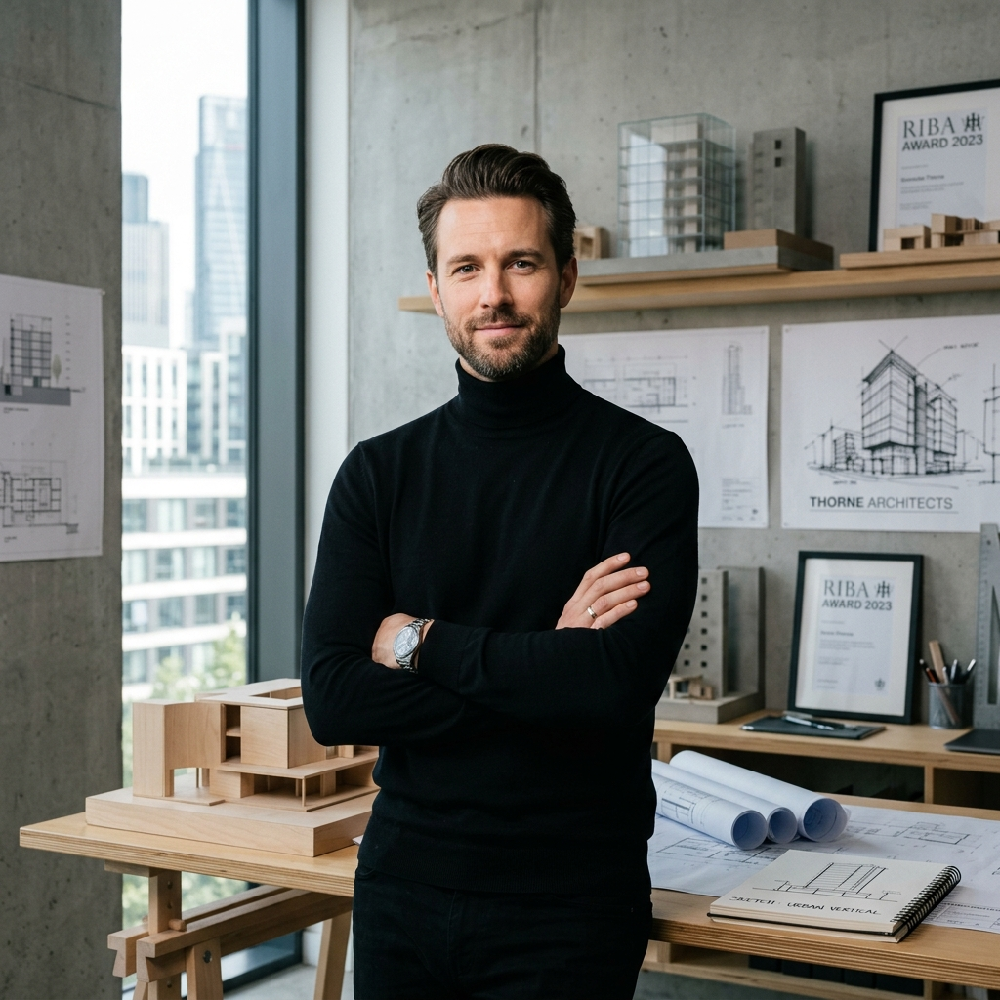
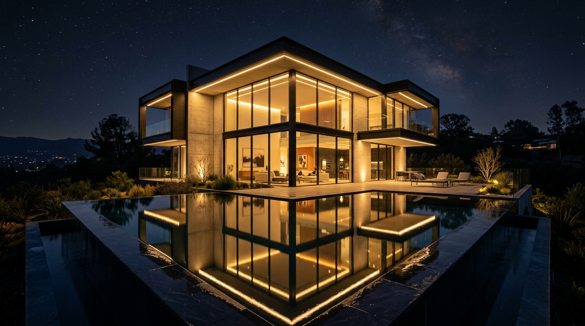
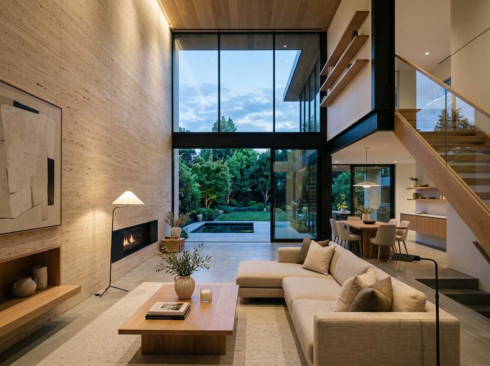
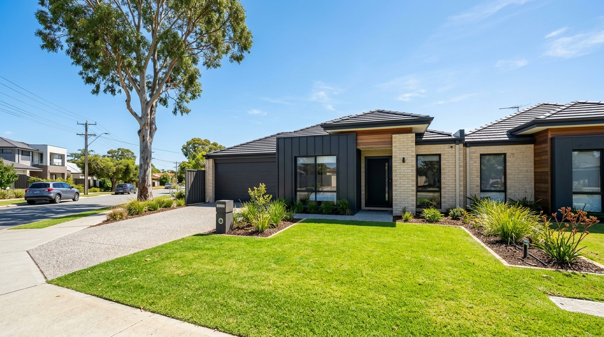
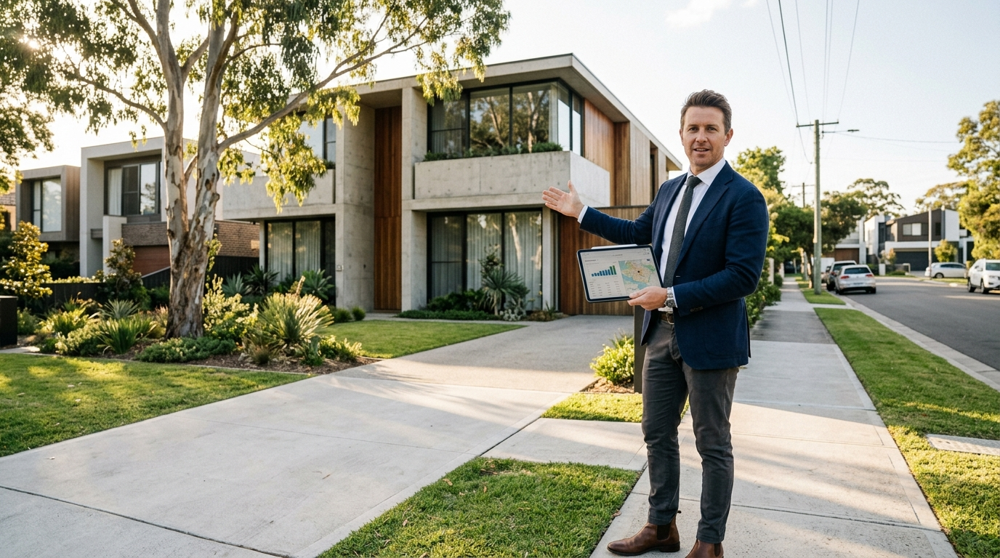
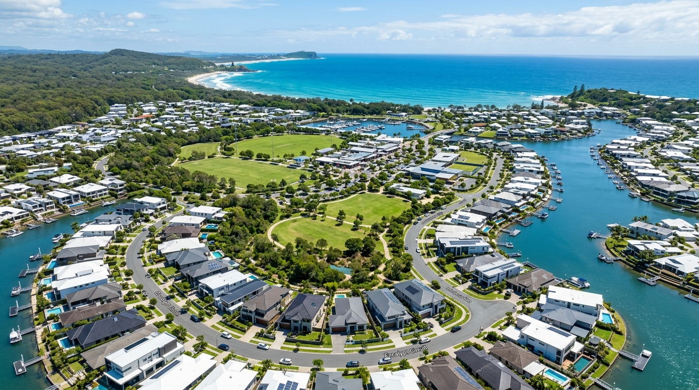

“We believe architecture is not merely about erecting walls, but sculpting living ecosystems that inspire the human soul and redefine sustainable modern living for centuries to come.”

ELEVATING EVERY DIMENSION OF CRAFT.
- 01. Architectural Precision & Vision ↗
- 02. Sustainable Net-Zero Engineering ↗
- 03. Premium Scandinavian & Alpine Materials ↗
- 04. Seamless Smart Living Ecosystems ↗
- 05. Transparent End-to-End Delivery ↗

TAKE A BIG STEP INTO THE FUTURE OF LIVING
EXPLORE THE BLUEPRINT ↗COMFORT & SPACE

Double-height ceilings, bespoke travertine stone surfaces, and natural daylight orientation maximize emotional well-being and energy conservation in harmony.
PEDRO RESIDENCE
A masterclass in cantilevered alpine geometry, framed in raw architectural concrete, glass curatorship, and panoramic forest vistas.
↗




COMMON QUESTIONS
From initial blueprint conceptualization to final turnkey handover, our streamlined precision-fabrication workflow typically spans 8 to 14 months, reducing standard architectural project timelines by over 40% while preserving museum-grade finish quality.
We integrate triple-glazed photovoltaic solar glass, deep geothermal heat pump loops, airtight envelope sealing, and smart thermal mass storage, allowing every Kontako residence to generate surplus green energy year-round.
Yes. Our in-house spatial advisory team conducts LiDAR topographic scanning, solar path modeling, geotechnical testing, and municipal zoning verifications before property purchase to ensure build viability.
We utilize certified cross-laminated Nordic timber (CLT), low-carbon sintered stone, recyclable steel frames, and non-toxic mineral lime renders sourced directly from certified European artisan suppliers.
We begin with a confidential 60-minute strategy session with our Principal Architect to review your lifestyle goals, spatial program, budget parameters, and site vision followed by a 3D architectural brief.